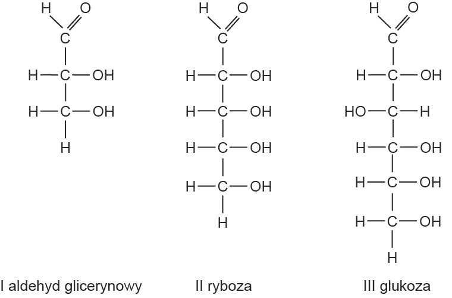

1. Co to są disacharydy? (1 pkt.)
2. Uporządkuj pojęcie do rysunku: (4 pkt.)
A: Aminokwasy
B: Monosacharydy
C: Disacharydy
D: Polisacharydy
B: Monosacharydy
C: Disacharydy
D: Polisacharydy



3. Jak są zbudowane disacharydy? (3 pkt.)
Disacharydy zawierają w cząsteczkach
oraz
pochodzi od symbolu czemicznego atomu tlenu, którym są za sobą połaczone
.
4. Jakie są izomery konstytucyjne (tylko 3 odpowiedzi są dokładne, niedokładna -0.25 pkt.)? (3 pkt.)
5. Sacharoza ulega: (1 pkt.)
6. Prawda/Fałsz: (5 pkt.)
1. Czy prawda, że wzory disacharydów przedstawia się przy użyciu wzorów Hawortha, nazywanych też wzorami Hydrokylowymi?
2. Czy prawda, że maltoza daje pozytywny wynik w próbie Tollensa?
3. Czy prawda, że hydroliza sacharydów nie zachodzi w układzie trawiennym?
4. Czy prawda, że maltoza podobnie jak sacharoza jest substancją gazową?
5. Czy prawda, że maltoza - to enzym zawarty w kiełkach?
7. Zastosowania disacharydow (tylko 3 odpowiedzi są dokładne, niedokładna -0.25 pkt.): (3 pkt.)
8. Ile w organizmie jest sacharyzy? (3 pkt.)
9. Co to jest RWS? (4 pkt.)
10. Zadanie: (8 pkt.)
Niepasteryzowane mleko, pozostawione w temperaturze pokojowej, kwaśnieje: obecne w nim bakterie mlekowe przekształcają cukier mlekowy, czyli laktozę
C12H22O11, w kwas mlekowy o wzorze
CH3CH(OH)COOH. Ten proces nazywamy fermentacją mlekową.
C12H22O11, w kwas mlekowy o wzorze
CH3CH(OH)COOH. Ten proces nazywamy fermentacją mlekową.
Napisz równanie reakcji fermentacji mlekowej laktozy – uzupełnij poniższy schemat. Zastosuj wzór półstrukturalny (grupowy) kwasu mlekowego.
Pamiętaj, że w procesie fermentacji mlekowej laktozy uczestniczy woda.
Pamiętaj, że w procesie fermentacji mlekowej laktozy uczestniczy woda.
C12H22O11 + H2O →